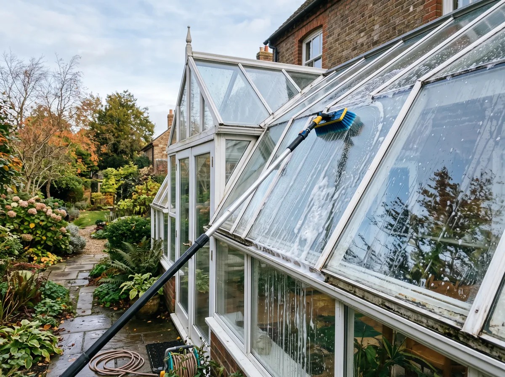
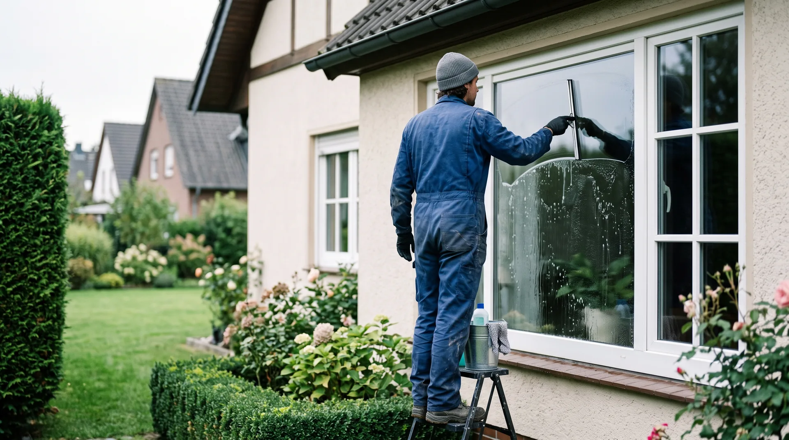
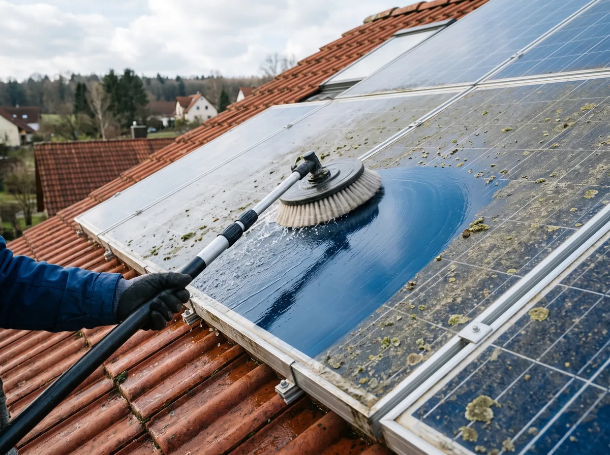
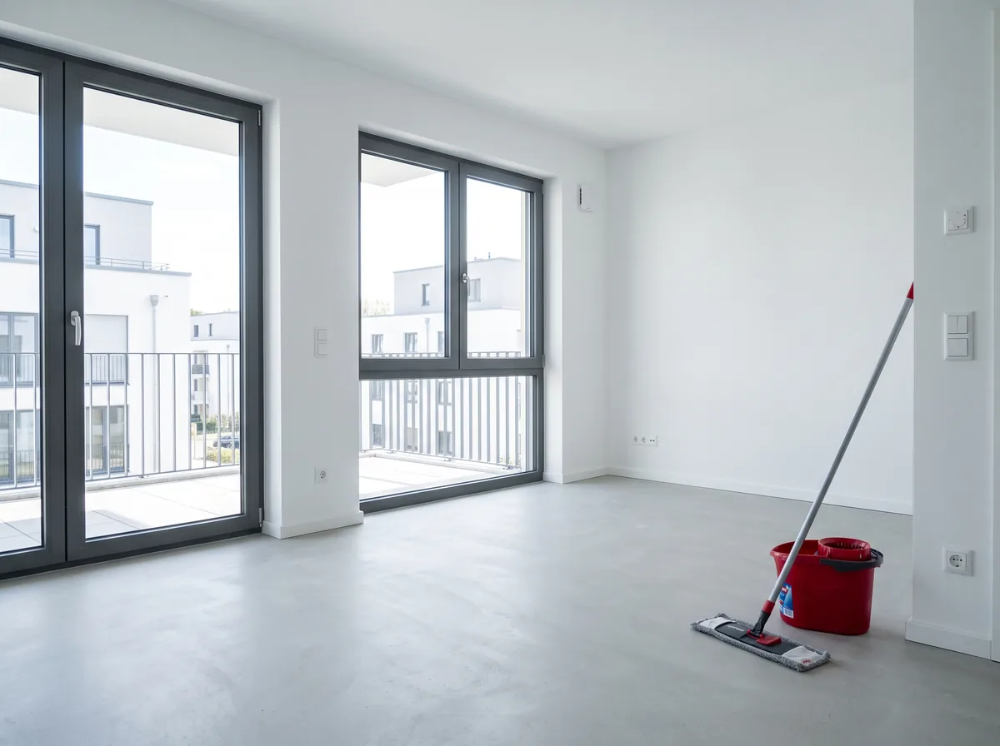
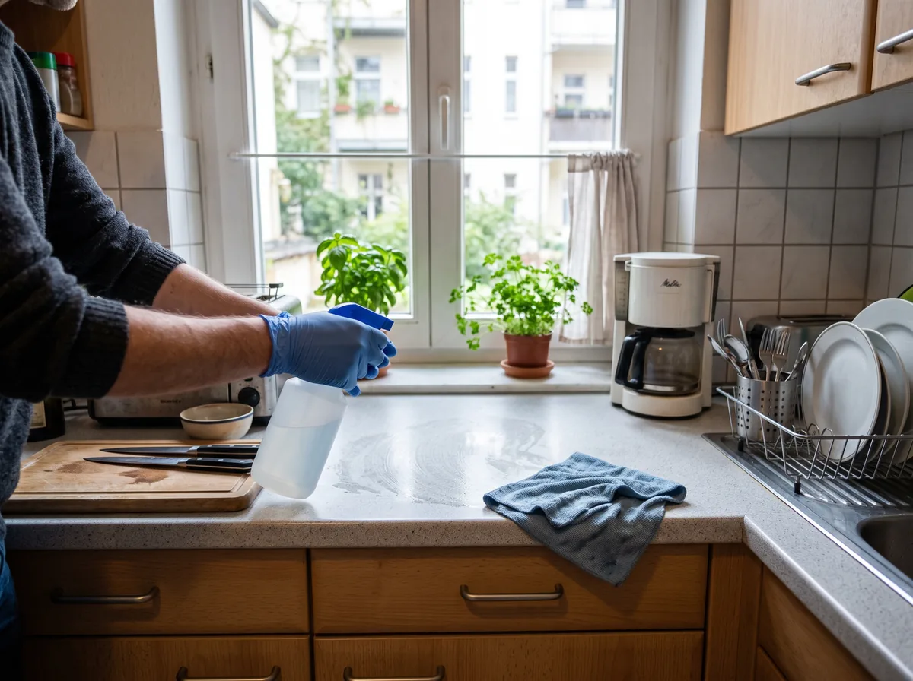
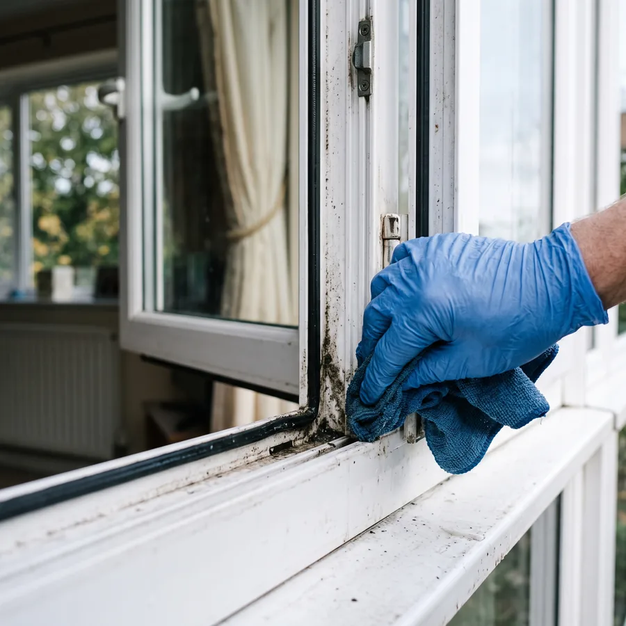
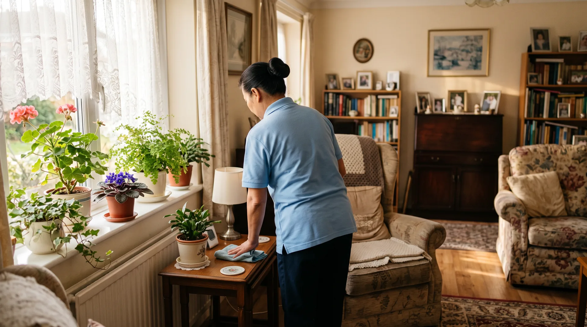

Fensterreinigung und Glasreinigung im Haushalt
Fenster innen und außen, Rahmen, Falze und Rollladenkästen, Wintergarten, Glasdach, Glastüren und Fliegengitter. Ich arbeite mit entkalktem Wasser, deshalb bleiben keine Kalkränder zurück.
Fenster, Wintergarten, Glasdach, Solaranlage und die Reinigung nach dem Bau. Ich komme zu Ihnen, arbeite streifenfrei und lasse Ihre Räume so zurück, wie Sie sie vorgefunden haben.
Unverbindlich, Antwort meist am selben Tag. Kein Vertreterbesuch, kein Abo.

Worum geht es bei Ihnen?
Eine Auswahl, keine Daten. Dauert unter einer Minute.
Wie viel ist es etwa?
Grob reicht, den genauen Preis nenne ich Ihnen danach.
Liegt schon ein Pflegegrad vor?
Ab Pflegegrad 1 sind das rund vier Stunden im Monat, für Sie ohne Eigenanteil.
Wohin darf ich antworten?
Meist noch am selben Tag. Kein Vertreterbesuch, kein Abo.
Ich melde mich meist noch am selben Tag mit einem Preis. Wenn es schneller gehen soll, rufen Sie einfach an.
Die Fenster sind dran, aber ich komme da nicht mehr hoch.
Wintergarten, Dachfenster, Treppenhausfenster. Genau da, wo es nötig ist, wird es unangenehm.
Ich habe geputzt, und trotzdem sieht man jeden Streifen.
Sobald die Sonne draufsteht, sieht man alles. Streifenfrei ist Technik, nicht Fleiß.
Ich habe angefragt und nie wieder was gehört.
Der häufigste Ärger in dieser Branche ist nicht schlechte Arbeit, es ist niemand, der zurückruft.
Meine Mutter braucht Hilfe im Haushalt, aber ich weiß nicht, was das kostet.
Bei Pflegegrad 1 steht Ihnen ein Budget zu, das die meisten nicht kennen. Ich rechne direkt mit der Kasse ab.
Alles vier ist lösbar, und zwar mit einem Anruf. Was das bei Ihnen kostet
Gegliedert nach Anlass, nicht nach Reinigungsverfahren. Sie sollen sich in einer der Karten wiederfinden.

Fenster innen und außen, Rahmen, Falze und Rollladenkästen, Wintergarten, Glasdach, Glastüren und Fliegengitter. Ich arbeite mit entkalktem Wasser, deshalb bleiben keine Kalkränder zurück.

Moos, Pollen, Staub und Vogeldreck kosten Ertrag, und zwar dauerhaft. Ich reinige Module schonend und ohne Chemie, die der Beschichtung schadet. Vorher sage ich Ihnen, ob sich die Reinigung bei Ihrer Anlage überhaupt lohnt.

Nach Neubau oder Sanierung: Bauschmutz, Zementschleier, Farbspritzer, Klebereste und Aufkleber runter, Fenster klar, Böden und Sanitär gebrauchsfertig. Ich weiß, dass hier ein Übergabetermin dranhängt.

Küche, Bad, Böden, Staub, Wäsche und Ordnung. Einmalig als Grundreinigung oder regelmäßig zum festen Termin. Für Menschen mit Pflegegrad rechne ich direkt mit der Kasse ab.

Rahmen, Falze und Dichtungen gehören dazu. Genau daran erkennt man hinterher, ob wirklich geputzt wurde oder nur die Scheibe abgewischt.
Wenn Sie für Ihre Eltern suchen, kennen Sie die Frage, die zuerst kommt: was kostet das, und was zahlt die Kasse? Hier ist die Antwort in Klartext.
Das ist der Punkt, den fast alle falsch kennen. Bei Pflegegrad 1 gibt es kein Pflegegeld und keine Pflegesachleistungen, aber es gibt den Entlastungsbetrag nach § 45b SGB XI: 131 Euro im Monat, zweckgebunden für Leistungen wie eine Haushaltshilfe. Ich bin als Anbieter dafür anerkannt.
Ich rechne direkt mit der Pflegekasse ab. Sie bekommen keine Rechnung, die Sie erst bezahlen und dann einreichen müssen.
Sie sagen mir den Pflegegrad und die Kasse, den Rest kläre ich. Wenn noch kein Pflegegrad vorliegt, sage ich Ihnen, wo Sie anfangen.
Was nicht ungesagt bleiben soll: Ich bin keine Pflegekraft. Ich übernehme den Haushalt, nicht die Körperpflege und keine medizinischen Leistungen. Wer beides braucht, braucht mich und einen Pflegedienst.
Kostenlos prüfen, was die Pflegekasse übernimmtEin Anruf, rund zehn Minuten. Unverbindlich, und ohne dass Sie vorher Unterlagen zusammensuchen.
Angaben zu Leistungen der Pflegeversicherung nach dem Stand August 2026. Über Ihren konkreten Anspruch entscheidet Ihre Pflegekasse.

Die Abrechnung läuft direkt zwischen mir und Ihrer Pflegekasse. Wenn Sie mehr Zeit brauchen als das Budget hergibt, sage ich Ihnen vorher, was die zusätzlichen Stunden kosten.
Sie erklären Ihre Wohnung einmal, nicht jeden Monat neu. Kein wechselndes Personal, keine Subunternehmer.
Die Nummer auf dieser Seite ist mein Handy, keine Zentrale und kein Callcenter. Sie sprechen mit der Person, die dann auch kommt.
Wenn ich einen Termin zusage, steht er. Wenn etwas dazwischenkommt, rufe ich an, bevor Sie warten.
Kein Bargeld unter der Hand. Sie können 20 Prozent der Arbeitskosten steuerlich geltend machen.
Haushaltshilfe ab Pflegegrad 1, direkt über die Kasse. Das hat im Umkreis kaum ein Reinigungsbetrieb.
Acht Fenster oder ein einzelner Wintergarten sind mir nicht zu klein. Genau das lehnen größere Firmen oft ab.
Was, wo, wie viele Fenster oder wie groß der Haushalt.
2 MinutenBei kleineren Aufträgen direkt am Telefon, bei größeren nach einem Blick vor Ort.
kostenlos und unverbindlichSie wissen, wann ich komme, und müssen nicht dabei sein, wenn Sie das nicht möchten.
fest zugesagtPflegegrad und Kasse reichen mir. Die Abrechnung läuft zwischen mir und der Pflegekasse.
ohne Ihr ZutunIch bin in Bad Salzschlirf zu Hause und arbeite selbst. Wenn Sie hier anrufen, sprechen Sie mit der Person, die dann bei Ihnen die Fenster putzt oder im Haushalt hilft. Das ist der Unterschied zu einer Reinigungsfirma, bei der Sie erst ein Büro erreichen.
Mein Gebiet sind Bad Salzschlirf und die Orte im Umkreis von rund acht Kilometern. Wenn Sie knapp außerhalb wohnen, fragen Sie trotzdem, oft passt es.
0160 2624098Mo bis Do 8 bis 17 Uhr, Fr 9 bis 13 Uhr. Außerhalb der Zeiten einfach eine Nachricht, ich rufe zurück.
Anzahl und Größe der Fenster, Etage und Zugang, Sprossen und Rollladenkästen, Verschmutzungsgrad, bei Haushalten die Fläche und der Rhythmus. Deshalb steht hier kein Festpreis. Sie bekommen den Preis, bevor ich anfange, nicht danach.
Kein Vertrag, keine Mindestlaufzeit, kein Abo. Auch nicht bei regelmäßigen Terminen.
Bei Pflegegrad 1 bis 5 steht der Entlastungsbetrag zur Verfügung, mit dem eine Haushaltshilfe bezahlt werden kann. Mein Satz liegt bei 31 Euro pro Stunde, das Budget deckt damit rund vier Stunden im Monat. Ich bin dafür anerkannt und rechne direkt mit der Kasse ab.
Reinigungsarbeiten im Haushalt sind haushaltsnahe Dienstleistungen. 20 Prozent der Arbeitskosten mindern Ihre Steuer. Voraussetzung ist eine Rechnung und bargeldlose Zahlung, beides bekommen Sie bei mir automatisch.
Angaben nach dem Stand August 2026. Für Ihre Steuer entscheidet Ihr Finanzamt, für die Pflegeleistung Ihre Pflegekasse.
Fünf Felder, kein Captcha. Oder rufen Sie einfach an, das geht schneller.
Am Telefon ist in zwei Minuten geklärt, was ein Formular in mehreren Runden bräuchte. Rufen Sie an, ich gehe selbst ran.
0160 2624098 glasreinigungsservice-schenk@outlook.comGlasreinigungsservice Schenk arbeitet in Bad Salzschlirf und den Orten im Umkreis von rund acht Kilometern. Für Glas, Solar und Bauendreinigung fahre ich auch weiter, fragen Sie einfach nach.